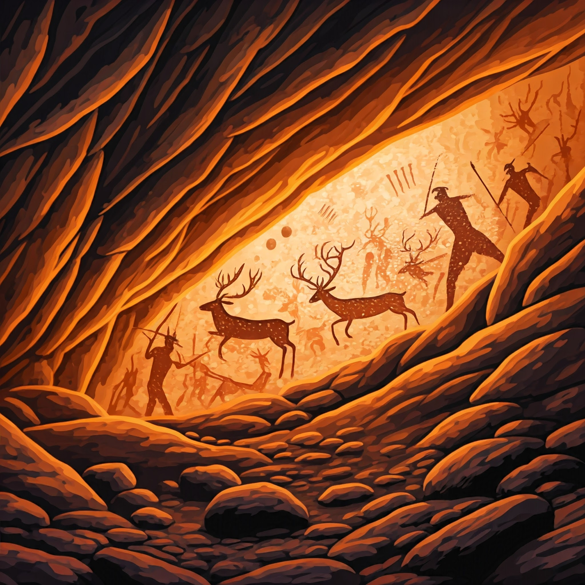
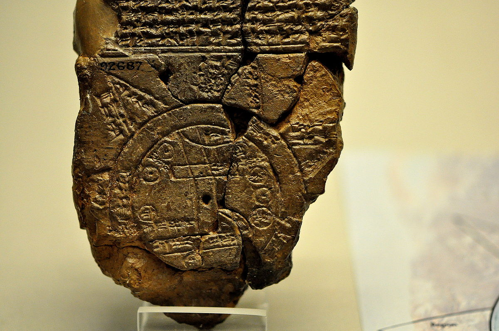
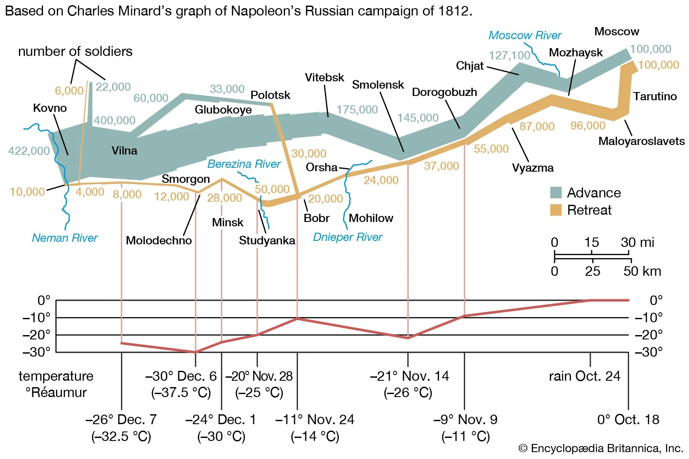

Introduction
Data visualization is the graphical representation of information and data using visual elements like charts, graphs, maps, and other visual tools. It allows individuals to see and understand patterns, trends, and insights in data more effectively. By leveraging visual contexts, data visualization makes complex data more accessible, understandable, and usable.
Key Components of Data Visualization
- Data: The raw information being visualized, often numerical or categorical.
- Visual Elements: Tools like lines, bars, points, and colors used to represent data.
- Tools/Software: Software like Tableau, Power BI, Google Charts, or Python libraries (Matplotlib, Seaborn) to create visualizations.
- Insights: The understanding gained from interpreting the visualization.
Common types of Data Visualization
- Bar Charts: Compare quantities across categories.
- Line Graphs:Show trends over time.
- Pie Charts: Represent proportions or percentages.
- Scatter Plots: Highlight relationships or correlations between variables.
- Heat Maps: Visualize data intensity using color gradients.
- Dashboards: Combine multiple visualizations for monitoring key metrics.
"Numbers have an important story to tell. They rely on you to give them a clear and convincing voice." — Stephen Few, Data Visualization Expert and Author
History and Evolution
Data visualization has come a long way. The visually appealing graphics and the captivating use of color theory we see today are relatively recent innovations. Historically, data visualization existed even before the advent of the internet, computers, or even pen and paper, relying on more rudimentary tools to communicate information.
“The greatest value of a picture is when it forces us to notice what we never expected to see.” — John W. Tukey, Statistician and Data Visualization Pioneer
1. Prehistory Era: The Dawn of Data Representation
Long before spreadsheets and charts, humankind was already creating visual stories to make sense of and share their world. Using substances such as charcoal, ochre, and other natural pigments, early man drew pictures and painted images on cave walls. Drawings of this nature-mostly on caves in Europe, Africa, and parts of Asia-represent some of the earliest examples of data visualization.
Cave Painting: Surviving and Counting
These primitive artworks, some dating back over 40,000 years, were not mere expressions of creativity. They were data records and survival guides. Cave dwellers illustrated hunting scenes, depicting animals they pursued and tools they used, effectively creating visual manuals for future generations.
In addition to survival storytelling, early humans also scratched or painted tally marks and other symbols on cave walls. These served as rudimentary counting systems, perhaps recording resources, days, or successful hunts. Examples of this include the Chauvet-Pont-d'Arc Cave in France, the Altamira Cave in Spain, and the Blombos Cave in South Africa. Each of these sites preserves a snapshot of our ancestors' ability to convey complex ideas visually.
Early Mapping by Traders
As humankind progressed, there came the need for merchants and traders to create rudimentary maps for the purpose of navigation and journey planning. Such maps, often etched onto stone, clay tablets, or animal hides, represented geographical knowledge and trade routes. These were crucial tools in the early economy, enabling traders to note pathways leading to remote markets or regions with a particular resource in abundance. Though these were not as precise as modern-day cartography, these maps allowed traders to conceptualize spatial information and plot and plan for future expeditions.
The Babylonian Map of the World is one of the oldest known maps and was done arround 600 BCE. Though way more sophisticated, it still demonstrates the very same urge that people used to have when organizing and illustrating information with graphics. Some other places where such drawings can be found are as follows:
The creative and practical use of visualizations during the pre-history established the foundation for the evolution of visualization for data. It underlies one of the oldest desires of man: to gain some sense of the world from images and symbols.
2. Mapping the Turning Point: How Data Visualization Shaped a Century of Change
The century preceding the modern era of data visualization saw some revolutionary changes in the representation of abstract and geographic data. From simple mapping to thematic mapping, that is, maps depicting more than just physical locations, this era saw it all. Driven by revolutions, wars, and industrial advances, visualizing information became key to strategy, governance, and societal understanding.
Thematic Mapping: Beyond Geography
The 18th and 19th centuries introduced thematic mapping, which are maps intended to show specific themes such as population density, the diffusion of disease, or economic activities. These maps show patterns and relationships that could not be conceived from a traditional static geographical map. For instance:

Visualization During Wars and Revolutions
Wars and revolutions during this period spurred the need for innovative data visualization.
Industrial Revolution and Statistical Visuals
The Industrial Revolution brought about never-imagined changes in industry, economy, and society. To understand this change better, statisticians and reformers used the visualization of data as a way of understanding and communication:

From Abstract to Actionable Insights
This period expanded the possibilities of seeing, but also the actual functions. Abstract data on a population, economy, health were depicted visually to support the decisions to be taken. Pioneers melding art, science, and mathematics together, data told as stories, from statistics, for a variety of purposes that actually shape decisions.
Where to Explore These Historical Visuals
A lot of these are still kept in various archives or museums:
These inventions at the time thus finally set the ground for the development related to data visualization in the modern age, be it thematic mapping or statistical graphics, becoming so integral to making data actionable and understandable.
3. The Modern Era: Data Visualization in the Digital Age
The modern era of data visualization, spanning from the latter half of the 20th century through today, is defined by rapid technological innovation coupled with an explosion of digital data. Visualization would transition from static charts into dynamic, interactive displays, enabled by sophisticated algorithms and real-time streams of data.
Other major milestones include access to visualizations through software such as Excel, Tableau, and Power BI. The internet facilitated widespread publishing of interactive dashboards and infographics, telling complex stories in a visual format. Big data and machine learning recently have taken the field beyond what had been possible to predictive analytics and sophisticated simulations.
Modern data visualization is not just about presenting data; it's about creating experiences. From immersive virtual reality environments to interactive web apps, today's visualizations help users intuitively explore and understand data. This era has redefined how we see and make decisions, merging art, science, and technology in a way that shapes our understanding of the world.
Acknowledgement
Special thanks to Asst. Professor Aman Shakya,Ph.D., for his invaluable guidance and knowledge sharing.